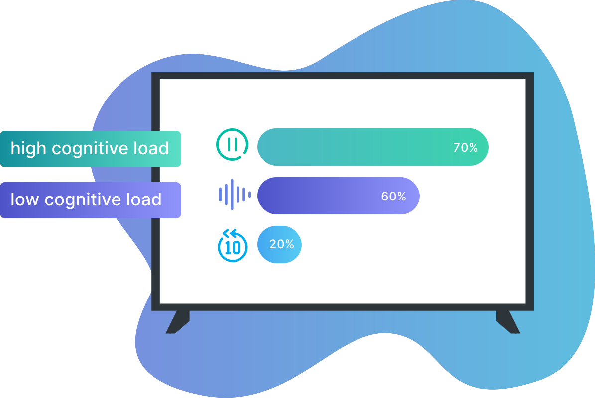

Whether we’re listening to a podcast while driving, listening to music while cooking, or watching a show that will help us relax after a long day at work - Content consumption is integral to our routine, regardless of the amount of attention we have to give or the mood we’re in. We expect our content to not only entertain us, but to flow with us throughout our day, fit into our routine, and adapt to our emotions. If we’ve had a long day at work, we’ll watch a drama to help us get out of our heads. If we’re doing chores around the house, we’ll rewatch The Office for the fourth time so we can be entertained despite our wavering attention.
We began envisioning a future where TV content would synthetically adapt to user's context, specifically their emotions, attention, and personal viewing preferences.
Considerations
emotional context
It's no secret that we use TV to feed our emotional needs. Whether we put on a tearjerker to wallow in our sadness, or counteract it with something happy, it became clear that users let their mood dictate the content they consume and anticipate that content would further regulate or change to adapt to their mood in the future.

Emotional responses and consequential content adaptations became a focal point of our prototyping for the future of digital television experiences. Users weren't too keen on plot changes. TV is in a golden age, and most wanted to experience what the writers intended, but there were several other ways we could adapt and elicit this emotional reaction including changes to:
Directing the plot on particular branch paths can be a dramatic adaptation for users during a content consumption experience and while stylistic adaptations are slightly more subtle, they can make just as much of an impact on a user’s experience by conforming to a user’s current and desired emotional state. Plot changes have more value on lower effort content or rewatches, a supplement to watching with the original plot and then shifting to show the user something new or interesting.
attention level
Growing numbers of users have begun to think of TV as a secondary, or background activity. Part of what makes it so appealing is that it requires no active input once you get started watching. You can make meals, chat with friends, workout, or browse the web while the show plays in the background. People usually choose shows that feel low-stakes, breezy comedies or rewatches, so that they don’t feel they have to miss anything, stop, and rewind.
With novel technologies in the near future, we could alleviate these pain points by monitoring attention levels and using it to feed the level of attention the content requires. We considered various modality changes to facilitate this process and maintain user engagement in content, including:
Testing of these three different engagement retainment techniques showed that users preferred pausing if they were partaking in a high-cognitive task and audio descriptions if they were partaking in a low-cognitive task. The rewinding method was the least popular amongst users due to it’s potential to disrupt the viewing experience, rather than aid it.
Modality Switch Method Preferred by Users

However, while we typically envision this being used with rewatches or low-effort content, due to the nuances of content-viewing and the circumstantial aspects of each unique viewer’s ever-changing context, some questions remain to consider in implementation of these engagement retainment methods.
- Should viewers get a choice of which modality to make a default?
- Should it be chosen for them?
- How does it differ on an initial watch compared to a rewatch?
historical viewing data
In the framework of content adaptation, historical viewing preferences in combination with scene-level emotional responses allows for customization of visuals to more accurately target emotions on a by-person basis. Current recommendation systems may be able to ascertain that the user wants to watch horror content in order to be scared, but what is it that scares this particular user? Gore? Jump scares? Or maybe such things deter viewers from engaging in particular genres. Additive and subtractive measures could even be made to accentuate certain attributes while dampening others, increasing the enjoyment of already watched genres while potentially opening up new genres that were previously avoided due to age or personal restrictions.
The system’s understanding of scene-level content attributes and the user’s historical preferences not only helps narrow down the correct content to place in front of the viewer, but also brings about the potential to distribute individual content to a wider market.
user control
While the goal for context-aware content is to have the narrative adapting automatically based on the user's emotional responses, we learned from early prototyping that users have mixed emotions about the automated viewing experiences. It's an experience they want to choose to have, not expect.
Integration into existing streaming platforms and the ability to toggle the feature on and off is imperative. AdaptiveWatch is a feature, a supplement, a way to enhance your viewing, but it's not the rule.
What it Looks Like
risk factors
Most consumers own internet-connected devices that are meant to make their lives easier, like smartwatches (Apple Watch, Fitbit, etc.), smart speakers (Amazon Alexa, Google Home, etc.), and security cameras (Ring, Nest, etc.) These devices are not necessarily always recording or monitoring us, but they are always listening - ready for a command to be given that would help them serve us better.
While the novel solution proposed by our team can blend seamlessly into user’s lives by utilizing these common smart home and wearable technologies, there is added risk to be considered if it were democratized as a product.

At the lowest end of the risk spectrum is the potential for over-personalization. With something as broad as TV, we like variety and new experiences because we can experience them at our leisure and comfort. If a user has a preference for a certain type of content or genre, they could get trapped in a cyclical feedback loop as the system continues providing this content and cuts out everything else.
Next at medium risk is the autonomy, or lack thereof, that users have over the adaptations in their content. While we are working towards defining where the user-preferred line is between control and automation, this will continue to be a gray area as synthetic content requires some degree of yielding user control, no matter what.
Finally at the highest risk level is data privacy and the invasive nature of a context-aware system. While most users already own most of the devices required to listen for and input a user’s current state, they would need to be made aware of the way in which their devices would be registering their environmental data in order to function and this has the potential to worry consumers about their privacy, or lack thereof. A potential design solution to mitigate this could be to provide a system whose data lives remotely on an individual user’s device or server, rather than on the cloud, and cannot be shared outside of the system itself.